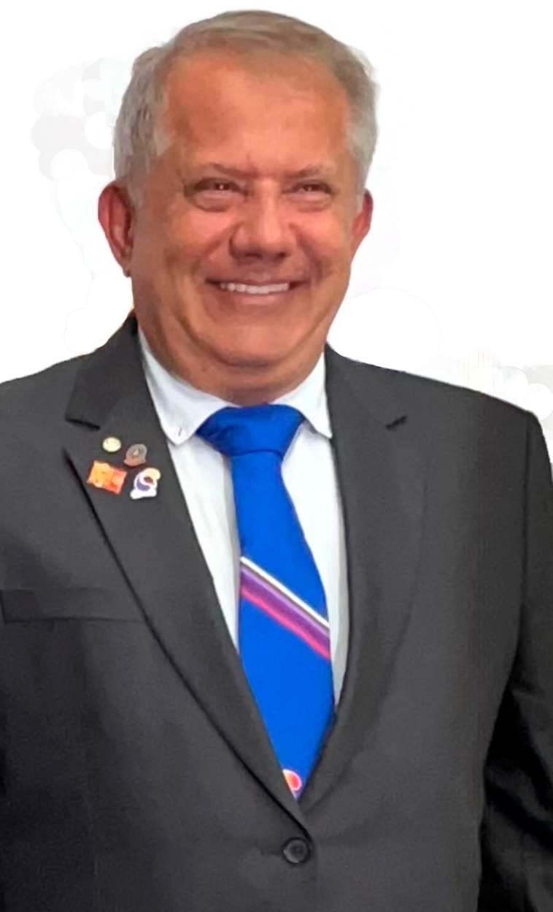

Rotary Club de Bauru
Ano rotário 2023-24 - Plano de Atividades
Curriculum do Presidente
José Melhem
José Melhem nasceu em 20/03/61, na cidade de Guararapes, SP, na região de Araçatuba, filho de Melhem Youssef Melhem e Jeannette Georges Melhem, imigrantes libaneses, vindos nos final dos anos 50 para o Brasil.
O presidente José Melhem é formado em técnico em Contabilidade pelo Colégio Guedes de Azevedo e bacharel em direito pela Instituição Toledo de Ensino.
Pai de Nayla Melhem e Nadya Maria Melhem, avô de Maria Isadora.
Iniciou a vida profissional no Escritorio Contábil Farid Madi e posteriormente indo trabalhar no Bauru Country Club, onde entrou como auxiliar de escritório e chegou ao cargo de Chefe de escritório do clube, saindo para ir trabalhar em empresa da família.
Após alguns anos trabalhando na empresa de familiares, resolveu ter sua própria empresa, assim se lançando no comércio varejista de roupas e depois no ramo da alimentação, passando por vários setores do mercado, mas nunca deixando o ramo de alimentação, tendo sido proprietário de padaria, loja de conveniência e roupas e acessórios, pizzaria.
Membro ativo do comunidade libanesa em Bauru, foi secretário, tesoureiro e atualmente presidente do Clube Monte Libano de Bauru.
Atualmente se divide entre trabalho no seu restaurante Kibelandia Cozinha Árabe, a sua família, o Club Monte Libano e recentemente o Rotary Club de Bauru.